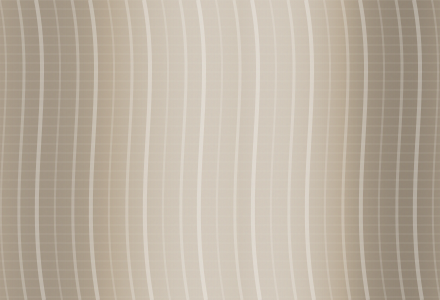
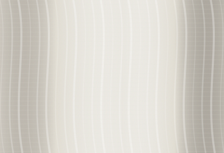
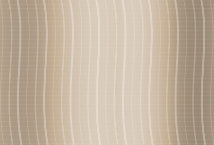
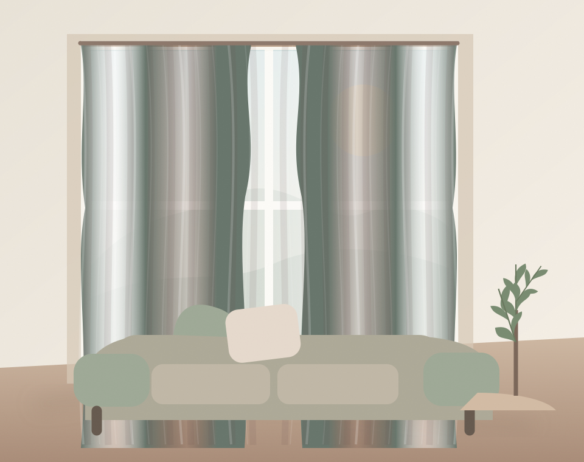

Бархат
Мягкий ворс и глубокий визуальный перелив. В ноябрьской подборке салона фигурирует модель Simone-354.
Образцы и актуальный ассортимент — по запросу в салоне
Материалы различаются плотностью, переплетением и тем, как ведут себя при дневном свете. Ниже — направления для вдохновения, а не перечень гарантированного наличия.
Мягкий ворс и глубокий визуальный перелив. В ноябрьской подборке салона фигурирует модель Simone-354.

Плотная основа для контроля света. В публикациях упоминается двусторонняя ткань L’Envers.

Выразительная, тактильная поверхность. В описаниях материалов упоминается серо-зелёный IZABEL.

Спокойная структура с заметным переплетением. Был опубликован комплект плотных портьер из рогожки.

Лёгкий текстиль, который мягко рассеивает дневной свет. Среди упоминаний есть Bruine.

Естественное настроение и комфортная нейтральная палитра. Конкретный состав и наличие уточняются.

В публикациях студии описано сочетание двустороннего блэкаута L’Envers и тюля Bruine. Одна сторона плотной ткани напоминает матовый бархат, другая — фактуру «ёлочка».
Стоимость, цвета и доступность конкретных материалов уточняются у Альбины.
Посмотреть сочетаниеДля спальни часто выбирают более плотные материалы. Для гостиной тюль может сохранить ощущение простора.
Ширина карниза и высота от крепления до желаемой нижней кромки нужны для первичной консультации.
Цвет на экране зависит от устройства и освещения. Перед окончательным выбором лучше согласовать реальную ткань.